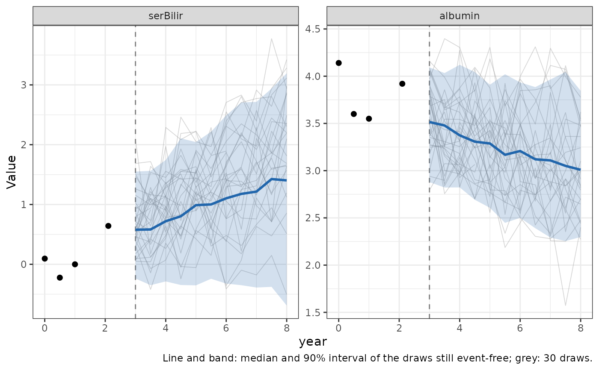
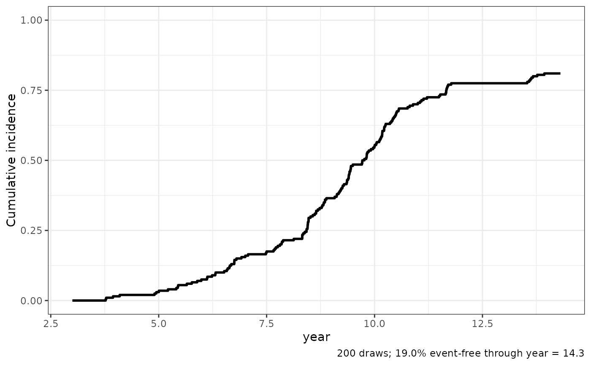

Simulate future trajectories from the backward joint model
Source:R/simulateTrajectory.R
simulateTrajectory.RdDraws n_sim complete futures for each patient from the
fitted backward joint model, conditional on the patient's longitudinal
history up to prediction_time and on being event-free at
prediction_time: an event time (and, with competing risks, an
event type), and the values of every biomarker at the requested
times. Where predictRisk and
predictLongitudinal summarize the predictive distribution,
this returns samples from it, so it can be used to generate synthetic
patients or to propagate the prediction into any other quantity (e.g. a
patient's "digital twin" under the fitted model).
Each draw follows the model's factorization \(f(T, D)\, f(Y \mid T, D)\):
\((T, D)\) is drawn from its posterior given the history, proportional to \(f(Y_{hist} \mid T, D)\, f(D \mid T)\, f(T)\) restricted to \(T > \)
prediction_time, evaluated on the same integration grid aspredictRisk's denominator;the random effects \(b\) are drawn from their Gaussian posterior given the history and the drawn \((T, D)\);
the biomarkers at
timesare drawn from the longitudinal sub-model given \((T, D, b)\), adding residual error.
A patient with no non-missing biomarker measurement up to
prediction_time (e.g. a single baseline row with the biomarkers set
to NA) is simulated from the model's prior given their baseline
covariates, i.e. as a new synthetic patient.
Usage
simulateTrajectory(
data_predict_all,
long_fit_all,
survival_fit_all,
prediction_time,
times,
time_variable,
survival_variable_all,
survival_trans_function,
n_sim = 100,
bandcount2 = 100,
max_event_time = NULL,
truncate = TRUE,
seed = NULL
)Arguments
- data_predict_all
This involves a collection of
data.frameobjects for dynamic prediction, each corresponding to a distinct longitudinal outcome. These data frames should contain the variables specified inlong_sub_fixedandlong_sub_random. Utilizing a list structure allows for the incorporation of multiple longitudinal outcomes, each potentially following different measurement protocols. In instances where all longitudinal outcomes are recorded at identical time points across patients, a singulardata.frameobject may be used in alist. Alternatively, a single baredata.frame(not wrapped in a list) may be supplied directly; it is then reused for every longitudinal outcome. It is presumed that each data frame is structured in a long format.- long_fit_all
Outputs from the model fitting process using the
nlmepackage, encompassing the results and parameters obtained from the analysis.- survival_fit_all
Results and parameters generated from the model fitting procedure, utilizing the
coxphfunction. These outputs include the comprehensive findings and variables derived from the analysis.- prediction_time
Time used to make the prediction.
- times
Numeric vector of times (on the scale of
time_variable) at which to simulate the biomarkers, each at leastprediction_time.- time_variable
The name of time variable in linear mixed model.
- survival_variable_all
The name of the transformed time-to-event outcomes variable.
- survival_trans_function
The transformation function used for time-to-event outcomes, in the order of
survival_variable_all.- n_sim
Number of futures to draw per patient.
- bandcount2
The number of intervals the event-time distribution after
prediction_timeis discretized into (see Details andpredictRisk).- max_event_time
Event times beyond this are reported as event-free through it, and the model is evaluated at it in their place (see Details). Defaults to
NULL, the last follow-up time of the datasurvivalSub()was fit on;Infturns this off.- truncate
If
TRUE, biomarker values at or after the drawn event time areNA(see Details).- seed
Optional integer seed, for reproducible draws. The caller's random number stream is left unchanged.
Value
A data frame of class "simulateTrajectory.BJM", with one
row per patient, draw and element of times, and columns: the
patient id (named as in long_sub_random); sim, the draw
number; time_variable; event_time, the drawn event time,
or max_event_time if the event comes after it; event, 1 if
the event occurs at event_time and 0 if the patient is event-free
through it; with competing risks, the drawn event type (named as the
response of form_conditional_cr, with the same 0/1 coding, and
NA when event is 0); and one column per
biomarker, named by its response variable (an ordered factor, with the
fitted categories as levels, for an ordinal biomarker). Attributes
"prediction_time", "times" and "max_event_time"
record the values used, and "history" the continuous biomarker
measurements conditioned on (for plot.simulateTrajectory.BJM).
Details
The event time is drawn on the grid of bandcount2 intervals that
predictRisk integrates over (each holding about the same
share of the conditional survival probability, with an extra edge at
max_event_time): an interval is drawn with its posterior
probability, the model is evaluated at its midpoint, and the event time
reported is uniform within it, so that summaries of the drawn event times
(e.g. the share before a given time) are not biased by rounding to the
midpoints.
Past the last follow-up time of the data survivalSub() was fit
on, the event-time distribution rests on an extrapolated baseline hazard
and the longitudinal sub-model's mean on event times it was never fit
on; drawn from a patient's prior (no history), a large share of event
times can land there, with implausible biomarker values. So an event
time beyond max_event_time (by default that last follow-up time)
is reported as event-free through max_event_time
(event = 0, event_time = max_event_time), and both the
history's likelihood and the simulated biomarkers use T =
max_event_time in its place, i.e. a patient whose event comes after
follow-up is assumed to follow the trajectory of one whose event comes
at its end. max_event_time = Inf turns this off and reproduces
the event-time distribution predictRisk integrates over.
The biomarkers at times are evaluated with the covariates of the
patient's last row in data_predict_all (with time_variable
set to each element of times), so a time-varying covariate is
carried forward at its last value.
The backward model describes the biomarkers before the event. With
truncate = TRUE (the default) a value at a time at or after the
drawn (or censored) event time is NA; with truncate = FALSE it is still
drawn from the sub-model, which is the quantity whose density
predictLongitudinal returns.
An ordinal biomarker (see longitudinalSubCopula) is the
discretization of a latent Gaussian score by the fitted thresholds, and is
simulated that way: its latent score is drawn like a continuous biomarker
(with unit residual variance) and cut into categories. In the history it
is known only to have fallen between the thresholds bracketing its
observed category: its contribution to the likelihood of \((T, D)\) is
a multivariate normal box probability, computed by Monte Carlo as in
predictRisk, and the random effects are drawn by first
drawing the history's latent scores from their truncated multivariate
normal distribution given the continuous measurements (by rejection, or
by Gibbs sampling when few proposals fall in the box), and then the
random effects given those scores. Supply seed for reproducible
draws.
See also
plot.simulateTrajectory.BJM to plot the draws.
Examples
# \donttest{
data(pbc3)
survival_fit_all = survivalSub(pbc3[!duplicated(pbc3$id), ],
Surv(years, status3) ~ age + sex, NULL)
long_sub_fixed = list(
"long1" = serBilir ~ year + age + sex + (years) + (years) * year,
"long2" = albumin ~ year + age + sex + (years) + (years) * year)
long_sub_random = list("long1" = ~ year | id, "long2" = ~ year | id)
data_fit_all = list(pbc3[pbc3$status3 == 1, ], pbc3[pbc3$status3 == 1, ])
long_fit_all = longitudinalSub(data_fit_all, long_sub_fixed, long_sub_random)
trans = survivalTrans(c(1, 3, 5, 7))
# Patient 2's history up to year 3: 200 possible futures over years 3-8
history = pbc3[pbc3$id == 2 & pbc3$year <= 3, ]
sims = simulateTrajectory(list(history, history), long_fit_all, survival_fit_all,
prediction_time = 3, times = seq(3, 8, by = 0.5),
time_variable = "year", trans$survival_variable_all,
trans$survival_trans_function, n_sim = 200, seed = 1)
head(sims)
#> id sim year event_time event serBilir albumin
#> 1 2 1 3.0 10.38897 1 0.4707228 3.352258
#> 2 2 1 3.5 10.38897 1 1.6383372 3.308015
#> 3 2 1 4.0 10.38897 1 1.3522315 3.253805
#> 4 2 1 4.5 10.38897 1 1.5869380 3.428172
#> 5 2 1 5.0 10.38897 1 1.5204490 3.151635
#> 6 2 1 5.5 10.38897 1 2.2175576 2.982109
# Probability of an event within 2 years, from the draws
first = sims[!duplicated(sims$sim), ]
mean(first$event == 1 & first$event_time <= 5)
#> [1] 0.03
# A new synthetic patient: baseline covariates only, biomarkers NA
new_patient = data.frame(id = "new", year = 0, age = 50, sex = 1,
serBilir = NA, albumin = NA)
synthetic = simulateTrajectory(new_patient, long_fit_all, survival_fit_all,
prediction_time = 0, times = 0:6, time_variable = "year",
trans$survival_variable_all,
trans$survival_trans_function, n_sim = 100, seed = 1)
plot(sims)

plot(sims, which = "event")

# }